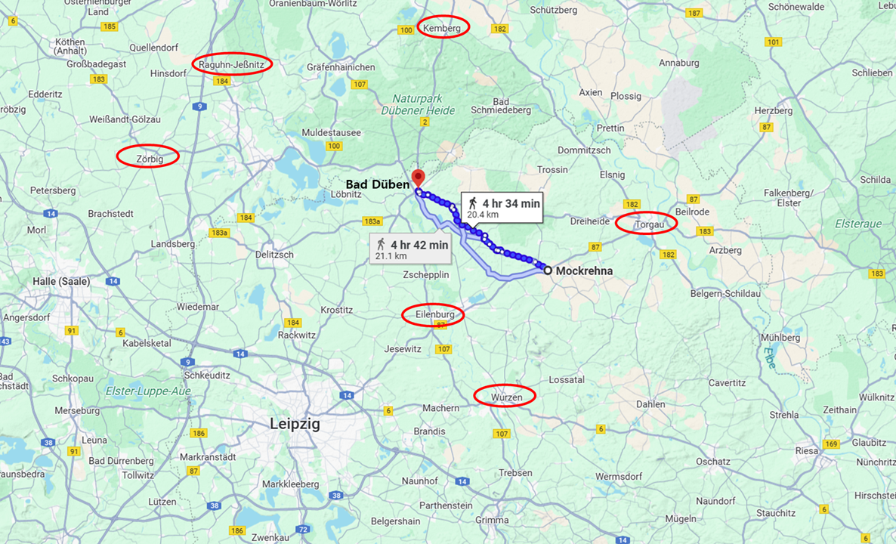
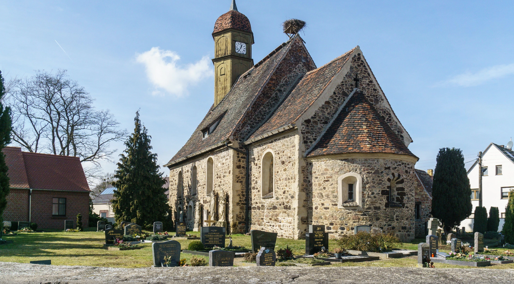
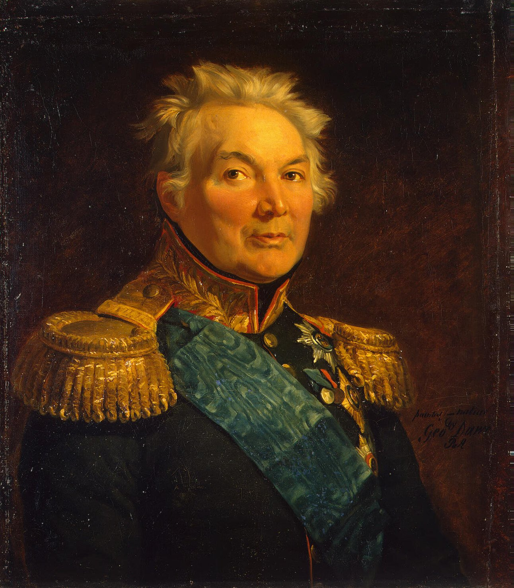
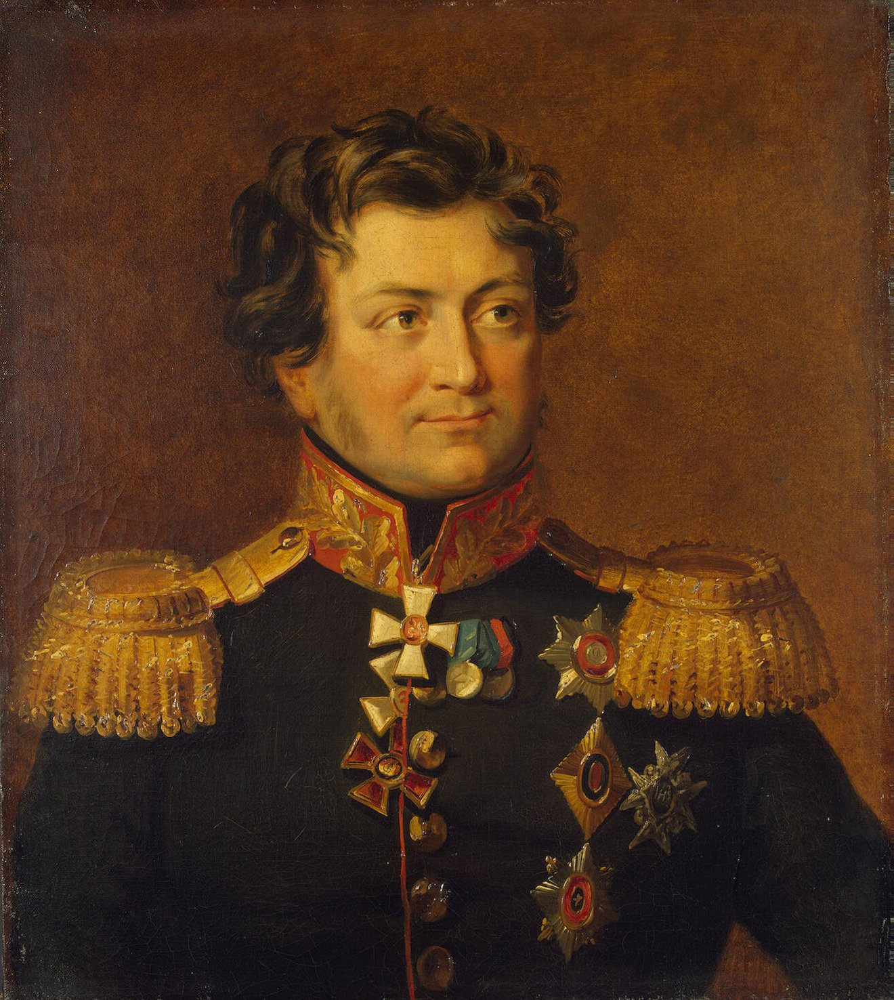
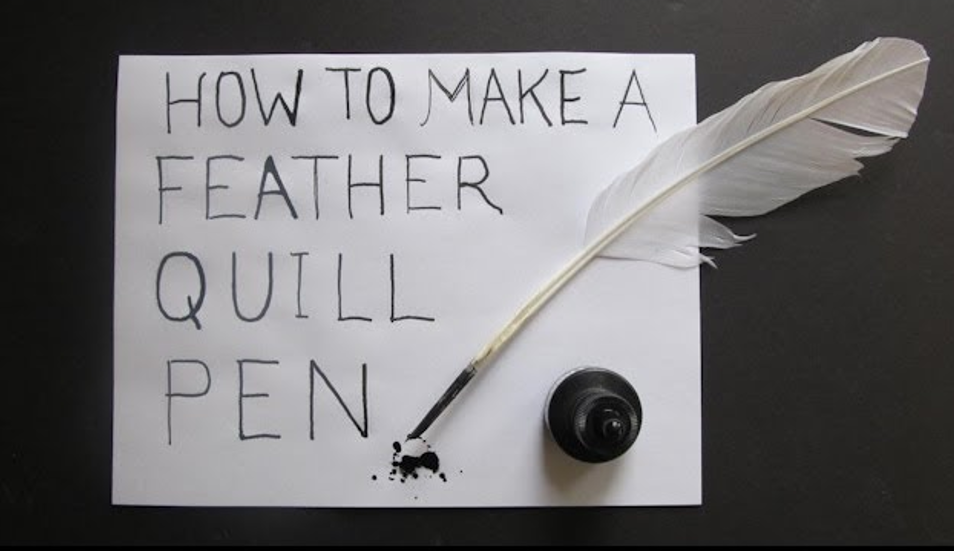

라이프치히로 가는 길 (23) - 보고서를 닥달하는 이유
게시: 2025-04-07T06:30:35+09:00
10월 9일 오전 나폴레옹이 블뤼허를 잡겠다고 멀더강을 따라 바트 뒤벤으로 밀고 올라가는 동안, 랑쥬롱의 러시아 군단과 함께 바트 뒤벤에 있던 블뤼허는 휘하 각 군단들에게 라이프치히로의 진격을 취소한다는 명령문을 보내고 있었습니다. 그때까지 블뤼허에게 들어온 여러 첩모에 따르면 나폴레옹이 라이프치히로 직행하고 있었으므로 서둘러 후퇴할 필요는 없다고 생각했던 것입니다. 그런데, 9일 오후가 되면서 여기저기서 그랑다르메 병력이 멀더강 좌우 강변을 따라 북상하고 있다는 소식이 들어오기 시작했습니다. 가장 먼저 날아온 보고서는 그 날 아침 7시경 아일렌부르크 동쪽의 모크레나(Mockrehna)에 있던 자켄(Fabian Gottlieb von der Osten-Sacken) 장군이 보낸 것이었는데, 그때만 해도 뷔르첸과 라이프치히 인근 타우차(Taucha)에서 그랑다르메의 상당 규모 병력 이동이 감지된다는 것 정도으므로 긴박감을 느낄 정도는 아니었습니다. 블뤼허는 어차피 자신이 오전에 보낸 라이프치히로의 진격을 취소할 것이므로 바트 뒤벤으로 돌아오라는 명령서가 자켄에게도 이미 도착했을 것이니, 적군이 북상하고 있다면 자켄이 알아서 물러나 바트 뒤벤으로 돌아올 것이라고 생각하고는 자켄이 도착하기를 기다렸다가 함께 서쪽으로 이동하기로 했습니다.

(모크레나와 아일렌부르크, 바트 뒤벤 등의 위치를 표시한 지도입니다. 나폴레옹은 적군이 북쪽, 그러니까 켐베르크 쪽으로 후퇴할 것으로 예상했지만, 바로 전에 이야기된 것처럼 블뤼허와 베르나도트는 서쪽의 죄르비히, 라군, 예스니츠 방면으로 후퇴했습니다.)

(모크레나는 지금도 인구 5천의 시골 읍 정도 되는 마을로서, 정말 랜드마크라고 할 만한 건물이 사진 속의 이 교회당 뿐입니다.) 그러나 아무리 기다려도 자켄이 이끄는 러시아 군단의 모습은 나타나지를 않았습니다. 블뤼허는 자켄 군단의 안위를 걱정하기 시작했습니다. 나중에야 알았지만, 자켄에게 발송된 진격 취소 명령서는 행정적인 실수와 그 명령서를 들고 말을 달린 연락 장교가 길을 잃는 불운이 겹치면서 의도보다 약 3시간 정도 늦게 전달되었습니다. 엎친데 덮친다고, 고지식한 러시아 장군인 자켄은 적의 규모와 이동 방향이 심상치 않아 블뤼허에게 후퇴 허가를 구한다는 전령을 보내놓고 그 답신을 기다리고 있었습니다. 그러는 사이에 행군이 빠르기로 유명한 그랑다르메는 아일렌부르크를 점령해버렸습니다. 그런 와중에 동쪽 엘베 강변을 따라 4~5만 규모의 그랑다르메 병력이 북상 중이라는 보고까지 자켄에게 들어왔습니다. 이렇게 이미 퇴로가 끊긴 절대절명의 순간에, 마침내 블뤼허의 진격 취소 명령서가 자켄에게 도착했습니다. 이 명령서의 내용을 요약하면 슐레지엔 방면군은 일단 서쪽의 잘러강 쪽으로 이동한다는 것이었습니다. 결국 자켄은 그랑다르메의 눈을 피해 슬그머니 병력을 이끌고 뒤벤(Düben) 황야라는 숲을 관통하여 북서쪽으로 이동하여 탈출했습니다.

(자켄 장군입니다. 그가 1813년 당시 이미 61세로서 나이가 많은 편이었는데도 계급은 다소 낮은 편이었던 이유는, 제4차 대불동맹전쟁 때 상관인 베니히센과 알력을 겪은 뒤 1807년 6월 항명죄로 유죄 판결을 받아 군에서 쫓겨난 경력이 있기 때문이었습니다. 그는 1812년에야 복귀했습니다. 프랑스인이라는 이유로 시종일관 블뤼허로부터 미움을 받았던 랑쥬롱과는 달리, 원래 발트해 연안 독일계 귀족이었던 그는 러시아군임에도 불구하고 블뤼허와는 매우 좋은 관계를 유지했습니다. 그러니까 본문에서 블뤼허가 자켄의 안위를 걱정하며 끝까지 기다려준 것은 진심에서 우러나온 행동이었을 것입니다.) 문제는 블뤼허였습니다. 오후 2시경이 되자, 바트 뒤벤의 외곽 초소에서 '남쪽으로부터 대규모 병력이 북상 중'이라는 보고가 들어왔습니다. 드디어 자켄의 군단이 도착했다고 생각한 블뤼허는 그들이 합류하면 출발할 요량으로 랑쥬롱 군단의 철수 시간을 더 늦췄습니다. 그러나 곧 그 병력은 러시아군이 아니라 그랑다르메라는 보고가 날아들었습니다. 바트 뒤벤에서는 난리가 났습니다. 블뤼허가 체면을 따지지 않고 서둘러 바트 뒤벤을 빠져나간 뒤 딱 1시간 만에 프랑스 기병대가 바트 뒤벤에 입성했고, 맨 마지막까지 뒤에 남았던 그나이제나우는 랑쥬롱의 예비 포병대와 함께 하마터면 프랑스군의 포로가 될 뻔했습니다. 블뤼허의 사령부까지 이렇게 일사천리로 방어선이 뚫려버린 것은 블뤼허의 병력 배치가 허술했기 때문만은 아니었습니다. 당연히 아일렌부르크에도 랑쥬롱 휘하의 병력들이 주둔하고 있었습니다. 문제는 보고였습니다. 당시 아일렌부르크에 주둔하고 있던 것은 랑쥬롱 휘하의 러시아군 전위대를 지휘하던 루체비치(Alexander Yakovlevich Rudzevich) 중장이었습니다. 루체비치 중장도 갑자기 밀려든 그랑다르메와 싸우며 후퇴하느라 정신이 없었지만, 그가 저지른 가장 큰 잘못은 그 날 저녁에야 블뤼허에게 그랑다르메의 북진에 대한 보고서를 써보냈다는 것이었습니다. 당연히 블뤼허는 그 날 밤 늦게서야 이젠 별 쓸모도 없게 된 그 보고서를 받을 수 있었습니다.

(루체비치의 초상화입니다. 나폴레옹보다 7살 연하였던 그는 원래 러시아인이 아니라 크림반도에 자리잡고 있던 타타르 귀족 가문 출신이었습니다. 그의 아버지가 러시아의 크림반도 병합에 공로를 세웠기 때문에, 즉 매국노 노릇을 한 덕분에 그의 가족들은 이슬람에서 러시아 정교로 개종한 뒤 러시아 귀족으로 받아들여졌고, 당시 여황이던 예카테리나 2세가 루체비치의 대모 역할을 맡았습니다. 이후 루체비치는 다른 러시아 귀족들처럼 일찍부터 군에 들어가 경력을 쌓았고 1812년에는 남서쪽 방면에 주둔하던 도나우 방면군 소속으로서 베레지나에서 후퇴하던 나폴레옹을 추격하는 일을 했었습니다. 나폴레옹 전쟁 이후로도 오스만 제국과의 전쟁에서 주로 활약했는데, 말년에는 좋은 가문 출신인 와이프의 위세를 믿고 군무를 좀 게을리하다가 견책을 당하기도 했습니다. 그는 54세에 루마니아 전선으로 향하는 배 위에서 급사했는데, 사인은 '상처입은 자존심과 감당이 되지 않는 비만'이었다고 합니다.) 루체비치가 저지른 잘못이 얼마나 큰 사고를 낼 뻔했는지를 보면 나폴레옹이 휘하 군단장들에게 왜 보고서를 강조했는지 이해가 갑니다. 나폴레옹이 참모장 베르티에를 통해 휘하 군단장들에게 보낸 편지들을 보면 당시 장군님들의 삶이 현대적 사무직원의 고된 하루와 하나도 다르지 않다는 것을 느끼실 겁니다. 나폴레옹은 그런 편지에서 언제나 하루에 4~5번씩 보고서를 올리라고 요구했고, 왜 보고서가 늦어지고 있느냐는 질책은 매우 흔하게 떨어졌습니다. 보고서 내용의 양식이 엉망이라는 책망도 자주 있었습니다. 베르티에의 질투를 받아 결국 연합군 측으로 망명했던 조미니의 경우도, 직접적인 망명 계기는 '보고서 제출을 게을리한 죄'로 체포 명령이 떨어졌기 때문이었을 정도로 이건 중대한 업무였습니다. 그러니까 나폴레옹의 군단장 노릇을 하려면 말을 타고 검을 휘두를 일보다는 책상에 앉아 보고서를 써야 하는 일이 훨씬 더 중요했던 것입니다. 언제나 강행군에 시달리며, 혹은 적과 치열한 전투를 벌이는 와중에 시간을 내어 그렇게 책상을 깔고 잉크와 깃털펜을 준비하여 보고서를 작성하고 암호화하고 또 그 사본을 만드는 등의 서류 작업을 하는 것은 결코 쉽지 않은 일이었고, 많은 서기들의 도움을 받아야 했습니다. 그렇게 나폴레옹이 보고서를 강조한 것은 관료주의에 젖었기 때문이라기 보다는 전쟁에서는 무엇보다도 정보가 중요했고, 그러기 위해서는 보고서가 신속 정확하게 작성되고 전달되어야 했기 때문이었습니다. 루체비치의 경우가 좋은 반면 교사라고 할 수 있습니다.


(깃털펜을 영어로 quill이라고 하지요. 당시엔 아직 금속펜촉이 없었기 때문에 거위 같은 큰 새의 깃털을 다듬어 펜으로 사용했는데, 깃털 끝을 다듬는 것도 굉장히 손이 많이 가는 일이었습니다. 게다가 거위 날개도 오른쪽 날개와 왼쪽 날개의 깃털이 휜 방향이 달라서, 오른손잡이는 오른쪽 날개 깃털을 쓰는 것이 편했습니다. 왼쪽 날개 깃털을 오른손에 쥐고 쓰면 깃털 끝이 얼굴 앞을 가렸으므로 성가셨거든요. 가난한 사람은 오른손잡이라고 하더라도 더 싼 왼쪽 날개 깃털을 써야 했습니다.) 비록 이런 소동이 있기는 했지만, 블뤼허의 슐레지엔 방면군은 아슬아슬하게 나폴레옹의 추격에서 벗어날 수 있었습니다. 하지만 불과 1시간 차이로 놓친 것이니, 빠른 행군으로 유명한 그랑다르메라면 쉽게 따라잡을 수 있지 않았을까요? 당연히 그랬어야 할 것 같은데, 네가 선봉을 선 이 추격전에서 그게 되지 않았습니다. 바트 뒤벤 일대에서 네가 건진 것이라고는 26명의 부상병과 함께 건빵이 잔뜩 실린 20대의 마차, 그리고 그 외에 낙오병 등 105명의 포로 뿐이었습니다. 왜 이런 일이 벌어졌을까요? 놀랍게도, 아슬아슬하게 놓친 블뤼허가 어디로 후퇴했는지를 그랑다르메는 알지 못했습니다. 그리고 그건 기병대의 부족이 원인이었습니다. 들판에는 계속 코삭 기병들이 출몰했으므로 정찰을 위해서는 대규모 기병대를 출동시켜야 했는데, 기병대가 부족하니 정찰을 여러 방향으로 보낼 수가 없었습니다. 그래서 적이 후퇴할 것이라고 나폴레옹이 예측한 방향, 즉 블뤼허가 엘베강을 건넜던 바르텐부르크 방향으로 정찰대를 보냈는데, 아무리 말을 달려도 후퇴하는 적군을 찾을 수 없었던 것입니다. 이미 언급되었다시피 블뤼허는 베르나도트의 제안에 따라 북쪽의 엘베강을 건너지 않고 서쪽의 잘러강을 건너 나폴레옹의 추격을 피하기로 했으니까요. 결국 베르나도트가 나폴레옹을 한 방 먹인 셈이었습니다. 이렇게 닭 쫓던 개 지붕만 쳐다보는 신세가 된 나폴레옹은 실망하여 추격에도 동참하지 않고 10월 9일 밤을 에일렌부르크에 머물렀습니다. 그래도 그는 블뤼허의 군단들이 바르텐부르크가 아니면 데사우 방면으로 철수했을 것이라고 믿고 그 쪽 방향으로 추격을 하도록 지시했습니다. 그리고 다음 날인 10월 10일 정오 무렵, 바트 뒤벤에 도착한 그에게는 좋지 않은 소식이 들어와 있었습니다. Source : The Life of Napoleon Bonaparte, by William Milligan Sloane Napoleon and the Struggle for Germany, by Leggiere, Michael V With Napoleon's Guns by Colonel Jean-Nicolas-Auguste Noël https://www.britannica.com/event/Napoleonic-Wars/Dispositions-for-the-autumn-campaign https://www.napoleon.org/en/history-of-the-two-empires/timelines/1813-and-the-lead-up-to-the-battle-of-leipzig/ http://www.historyofwar.org/articles/campaign_leipzig.html https://ru.wikipedia.org/wiki/%D0%A0%D1%83%D0%B4%D0%B7%D0%B5%D0%B2%D0%B8%D1%87,_%D0%90%D0%BB%D0%B5%D0%BA%D1%81%D0%B0%D0%BD%D0%B4%D1%80_%D0%AF%D0%BA%D0%BE%D0%B2%D0%BB%D0%B5%D0%B2%D0%B8%D1%87 https://www.youtube.com/watch?v=-EIgYQZZIes https://en.wikipedia.org/wiki/Fabian_Gottlieb_von_der_Osten-Sacken